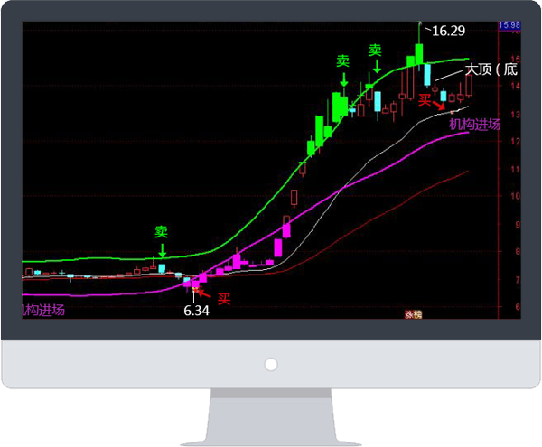

首席金牌投顾 杜咏泉 22年入市操盘经验
投顾资质编号（A0080617030001）
曾任《每周证券》机构专栏评论员
在湖北卫视、武汉电视台、湖北经济广播电台、楚天卫星台、长江经 济广播电台出任特约嘉宾
3年擒获379个涨停板
凭借 《游泳理论》抓牛股，成功率高达87.6%
全国各地学生上万人，被长江商报誉为“投资奇人”
《游泳理论：实战擒牛》教学课程源自A股实战专家阿杜老师的22年实战经验 和多项独门绝技，以低风险、高回报、高胜率为核心交易原则，立足防守、大胆进攻！

《牛股动量轨道》是阿杜老师独创私人操盘指标 ，该操盘工具经过22年 实战交易的检验、优化和升级，在业内被誉为“波段神器”，是阿杜老师本 人的不二操盘工具。
动量轨道可作为操盘过程中对买点和拐点判断的一大参考，简单高效回 朔过去一年，动量轨道捕捉上证指数波段买卖点的正确率达到90%掌握《游 泳理论：实战擒牛》交易系统，可以大幅提升动量轨道的实战效果。